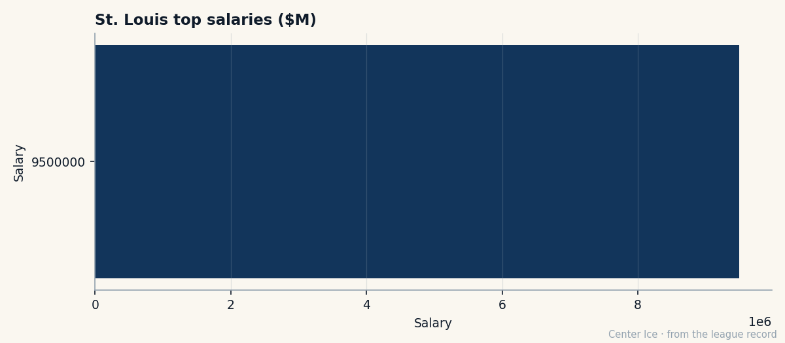

The Captain's Burden: Chris Pronger, 33 Minutes a Night, and the Contract That Expires in June
He was drafted second overall, behind a man who said nobody remembers number two. Pronger won the Hart and the Norris. Now he is 30, the most expensive defenceman in the league, and the captain of a team with 14 wins.
 Carol BinghamFeatures writer · Rinkside
Carol BinghamFeatures writer · Rinkside Chris Pronger86 plays 33.0 minutes a night.
Chris Pronger86 plays 33.0 minutes a night.  St. Louis Blues has won 14 games. He is on $9.50M with one year left on the contract, his morale reads 98, and the Bureau's potential number for him is 66.
St. Louis Blues has won 14 games. He is on $9.50M with one year left on the contract, his morale reads 98, and the Bureau's potential number for him is 66.
Read those together and you get something like the patience a captain keeps when he stopped counting the years ago. Second overall pick in 1993, selected behind Alexandre Daigle, who told the room he was glad to go first because nobody remembers number two. Born in Dryden, Ontario, he played Jr. B in Stratford before moving to Peterborough, having said he would go to Bowling Green. Hartford drafted him, and on a July afternoon in 1995 a trade for  Brendan Shanahan81 dropped him in St. Louis, where he has worn the same sweater for nine seasons.
Brendan Shanahan81 dropped him in St. Louis, where he has worn the same sweater for nine seasons.
That blue-and-gold sweater belongs to a club with 46 points, a $56.63M payroll, and $1.23M in expense for every point in the standings. Pronger's $9.50M is 16.8% of that payroll. He carries it in minutes and in a number the Development Index put down this week: minus two, overall 86 against a base of 90. The road, from here, goes down.

From Dryden to the Hart, in seven seasons
The background is plain enough. Jim Pronger worked in a mill. Eila, his mother, came from Pori, Finland. Dryden is not a hockey town in any way that reaches a scout's notebook, but the Ontario U-17 program found him at 15 and put him in Stratford, where a future NHL defenceman named Greg de Vries was his partner. He played two seasons in Peterborough and was 18 when Hartford called his name at the 1993 Entry Draft.
The Whalers finished second-last in the Eastern Conference his rookie year. That spring, arrested twice: once in Buffalo after a barroom brawl with five teammates and a coach, once on a drunk-driving charge in Ohio three days after the season ended. Kelly Chase, his teammate, said later that you could see the talent but there was no direction. Then Shanahan came, and Pronger went the other way, to St. Louis, where Mike Keenan made him run and Wayne Gretzky arrived late in his first year there and absorbed the attention a 20-year-old captain was not ready for.
He won the Hart at 25, in 1999-2000, with 62 points and a career-high plus-52, and the Norris voters gave him the trophy that same year. Six years between the draft and those two things. He is 30 now. The Bureau's Book has him at 90 on the base, which is the highest any defenceman in this league is rated, and the form is minus two for this week, and the potential is 66. That potential number is the one that says the ceiling is above him now.
What 33 minutes costs a man at 30
Endurance 93, aggression 92, balance 92. Those are the numbers on the Book that let him play that much. The man who had the cardiac arrest in the 1998 playoffs, hit in the chest by a puck in a game against  Detroit Red Wings, who came back to play in the Olympics that February and the All-Star Game that spring, is the same man who steps onto the ice 33 minutes a night in February 2005 and does not come off. His faceoff grade is 50 and his fighting grade is 51. He does not need either.
Detroit Red Wings, who came back to play in the Olympics that February and the All-Star Game that spring, is the same man who steps onto the ice 33 minutes a night in February 2005 and does not come off. His faceoff grade is 50 and his fighting grade is 51. He does not need either.
The 2003-04 season: 82 games, 82 points, 30.5 minutes a night. This season: 52 games, 31 points, 33.0 minutes a night. He is playing two and a half more minutes every night for half the production. The team is not asking him to score. It is asking him to hold the blue line because there is no one else who can hold it, and  Barret Jackman86 is 23 and playing 30.7 of his own, and the rest of the room is Maxim Zholtok and Riku Hahl and Eric Manlow, men with 67 and 63 and 65 on the Book.
Barret Jackman86 is 23 and playing 30.7 of his own, and the rest of the room is Maxim Zholtok and Riku Hahl and Eric Manlow, men with 67 and 63 and 65 on the Book.
The contract that expires in June
$9.50M is the highest salary the Contract Ledger carries on a defenceman. Only three other players in the league with one year left make more money:  Jason Allison87 at $6.70M,
Jason Allison87 at $6.70M,  Ed Belfour93 at $6.50M,
Ed Belfour93 at $6.50M,  Patrik Elias86 at $4.90M. Pronger is above all of them by $2.80M. His club finished last season with 46 points and did not make the playoffs. This season is running the same shape.
Patrik Elias86 at $4.90M. Pronger is above all of them by $2.80M. His club finished last season with 46 points and did not make the playoffs. This season is running the same shape.
The Ledger has his morale at 98. A man at 98 is not about to force a trade. He plays 33 minutes because the kid beside him is 23 and the man on the other side of the room is 34 and nobody else in the building has a balance grade of 92.
What happens in June is not a story yet. The trade deadline is 40 days away and his name will come up because the salary is $9.50M and the record is 14 and 27 and the contract ends and any general manager with cap space would look. But the morale is 98 and the potential is 66, and he has only been traded once, in 1995, because a different general manager made a different decision. Then he stayed in the place that decision dropped him for nine seasons and counting.
The Bureau's Development Index has him at minus two this edition. Last edition it might have been minus one or zero. The base is 90 and the potential is 66 and the minutes are 33.0 and the contract is one year. He will play every game, every minute they need. Whoever picks up the phone in June will hear the same thing the last nine Junes said. He stays.